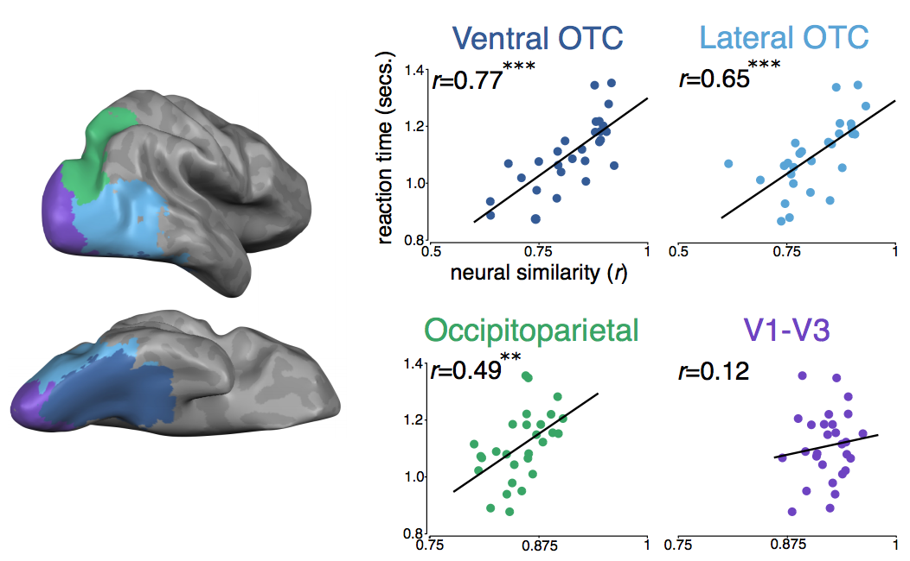

Welcome to the Konkle Lab!
Our broad
aim is to understand how we see and represent the world around us. How is the human visual system organized, and what pressures guide this organization?
How does vision interface with action demands, so we can interact in the world, and with conceptual representation, so we can learn more about the world by looking?
My
approach starts from the premise that the connections of the brain are driven by powerful biological
constraints—as such, where different kinds of information is found in the brain is not arbitrary,
and serves as a clue into the underlying representational goals of the system. My research approach is
inspired by considering the experience and needs of an active observer in the world—this thinking continually
deepens my understanding of how behavioral capacities are expectant in the local
and long-range architecture of the brain, and how neural networks absorb the statistics
of visual experience and the consequences of actions,
to realize the functions latent in the structure.
The
techniques we use include both empirical and computational methods.
We use functional neuroimaging and electroencephalography to measure the human brain.
We develop computational models to link network architecture with cortical topography.
We use behavioral methods to measure human perceptual and cognitive capacities.
And, we draw on machine vision and deep learning approaches to gain empirical traction into the formats of hierarchical visual representation that can support different visual behaviors.
contact:
talia_konkle@harvard.edu |
CV |
google scholar |
@talia_konkle
William James Hall 780
33 Kirkland St
Cambridge, MA
(617) 495-3886
Current research projects:
Modeling Cortical Topography
- video: Organizational motifs of cortical responses to objects emerge in topographic projections of deep neural networks Doshi & Konkle.
- video: Wiring minimization of deep neural networks reveal conditions in which multiple visuotopic areas emerge Obeid & Konkle.
On the nature of object representation
- video: Computational evidence for integrated rather than specialized feature tuning in category-selective regions. Prince & Konkle.
- video: Deepnets do not need category supervision to predict visual system responses to objects. Konkle & Alvarez.
- video: Object-selective cortex shows distinct representational formats along the posterior-to-anterior axis: evidence from brain-behavior correlations. Magri & Konkle.
- video: Mid-level feature differences support early EEG-decoding of animacy and object size distinctions. Wang, Janini, Kallmayer, & Konkle.
- video: How big should this object be? Perceptual influences on viewing-size preferences. Chen, Deza, & Konkle.
Exploring what else deep neural networks can do
- video: Approximate number representations emerge in object-trained convolutional neural networks and show human-like signatures of number discrimination. Janini & Konkle.
- video: Comparing representations that support object, scene, and face recognition using deepnet trajectory analysis. Kallmayer, Prince, & Konkle.
Scenes, reachable environments, and the periphery
- video: Neural representation of the visual environment along the continuum from objects to scenes. Park, Josephs, & Konkle.
- video: Emergent dimensions underlying the reachable world. Josephs, Hebart, & Konkle.
- video: Foveation induces Robustness to Scene Occlusion in Deep Neural Networks. Deza & Konkle.
Recent Talks:
Video: Why is that there? Feature mapping across the visual cortex
Cognitive Computational Neuroscience Keynote. Sept 13-16, 2019.
Video: What do deep neural networks tell us about object representation?
Cognitive Neuroscience Society. March 13-16, 2021.
Video: Content Channeling along the Ventral Visual Stream
National Academy of Sciences Colloquium. May 1-3, 2019.
Key Findings:
Evidence for perceptual differences underlying categorical distinctions
Apples look like other apples, oranges look like other oranges, but do small objects look like other small objects?
Because there are so many kinds of small objects (e.g., cups, keys), is is often assumed that there are not reliable perceptual features that distinguish them from big objects (e.g., cars, tables)?
However, we have found that there are mid-level shape differences that capture broad conceptual distinctions like real-world size and animacy.
Further, a substantial portion of ventral stream organization can be accounted for by these differences in coarse texture and form information, without requiring explicit recognition of intact objects.
Broadly, this line of work explores the idea that there is an extensive perceptual representational space which supports downstream processes like categorization and conceptual processing.
Mid-level perceptual features distinguish objects of different real-world sizes. Long, Konkle, & Alvarez (2016) JEP:General.
A familiar-size Stroop effect in the absence of basic-level recognition. Long, & Konkle (2017) Cognition.
Mid-level visual features underlie the high-level categorical organization of the ventral stream. Long & Konkle (2018). PNAS.
For this line of work, we developed a new stimulus class we called "texforms". Read more about them here
(Texform FAQ),
with code to generate them here
(GitHub Repo).
Mapping the reachable world
While there are clear distinctions between objects and scenes, what about the intermediate-scale space in between?
Neurally, we found that images of "reachspaces" activate a distinct large-scale topographic representation from both close-up object views and navigable-scale scene views.
Behaviorally, we found that perceptual similarity computations dissociate reachspace images from both object and navigable-scale scene images.
To facilitate this research we have created the
Reachspace Database: a new image database of over >10k high-quality images.
Large-scale dissociations between views of objects, scenes, and reachable-scale environments in visual cortex. Josephs & Konkle, T. (2020) PNAS.
Emergent dimensions underlying human understanding of the reachable world. Josephs, Hebart, & Konkle, T. (2021) PsyArXiv.
Perceptual dissociations among views of objects, scenes, and reachable spaces. Josephs & Konkle (2019). JEP:HPP.
The world within reach: an image database of reach-relevant environments. Josephs, Zhao, & Konkle (2021) Journal of Vision
En route to action understanding
Recognizing actions and inferring intentions and goals are essential capacities for navigating the social world. What are the perceptual precursors to more abstract action representation?
We found evidence for five large-scale networks underlying visual action perception: one related to social aspects of an action, and four related to the scale of the “interaction envelope”, ranging from fine-scale manipulations directed at objects, to large-scale whole-body movements directed at distant locations.
behavioral assays into action representation revealed converging insights: actions are intuitively considered similar based on the agent’s goals, but the visual brain responses reflect the similarity of body configurations.
Broadly, this work begins to articulate the visual representation en route to understanding the actions of others around us.
Sociality and Interaction Envelope Organize Visual Action Representations. Tarhan, & Konkle (2020) Nature Communications.
Behavioral and Neural Representations en route to Intuitive Action Understanding. Tarhan, De Freitas, & Konkle (2021) bioRxiv.
Reliability-Based Voxel Selection. Tarhan & Konkle (2020). NeuroImage.
Links between neural organization and perceptual similarity computations
The human visual system is built to efficiently extract and encode the structure of the natural world, transforming information from early sensory formats into increasingly abstract representations that support our behavioral capacities.
In a series of studies, we probed the links between neural responses and a variety of visual behavioral measures, including visual search, visual masking, and visual working memory.
This line of work points to the overarching result that there is a common representational structure across all of high-level visual cortex that underlies our ability to process object categories.
Processing multiple visual objects is limited by overlap in neural channels. Cohen, Konkle, Nakayama, Alvarez. PNAS, 2014.
Visual awareness is constrained by the representational architecture of the visual system. Cohen, Konkle, Nakayama, Alvarez. Journal of Cognitive Neuroscience, 2015
Visual search for object categories is predicted by the representational architecture of high-level visual cortex. Cohen, Nakayama, Alvarez, & Konkle. Journal of Neurophysiology, 2017.

The real-world size of objects is a key property of internal object representations
One insight into the nature of object representation is to consider that objects
are physical entities in a 3-dimensional world. This geometry places places important constraints on how people experience and interact with objects of different sizes.
In a series of behavioral studies, we found that the real-world size of objects is a basic component of object representation.
Just as objects have a canonical perspective, we showed they also have a canonical visual size (proportional to the log of their real-world size).
Further, size-knowledge is automatically activated when an object is recognized.
Finally, we are exploring how this property of object representations emerges in development. We found found that by the pre-school years, kids are sensitive to the perceptual differences between big and small objects, and automatically activate real-world size information in a size-stroop task.
Canonical visual size for real-world objects.
Konkle & Oliva. Journal of Experimental Psychology: Human Perception and Performance, 2011.
A Familiar Size Stroop Effect: Real-world size is an automatic property of object representation.
Konkle & Oliva. Journal of Experimental Psychology: Human Perception and Performance, 2012.
Real-world size is automatically encoded in preschoolers’ object representations.
Long, Moher, Carey, & Konkle. PsyRxiv.
Animacy and object size are reflected in perceptual similarity computations by the preschool years.
Long, Moher, Carey, & Konkle. SRCD.
How much can we remember about what we see?
Another way we investigate the nature of high-level visual representations
by understanding how and what we store about them in memory.
We discovered that people are capable of remembering
thousands of visually-presented objects and scenes with much more detail than previously believed.
This remarkable capacity for retaining highly-detailed memory traces relies on our existing conceptual knowledge:
the more we know about the different kinds of objects, the less they interfere in memory.
The thesis emerging from this research is that one cannot fully understand memory capacity or memory processes
without also determining the nature of representations over which they operate.
Selected Publications:
Visual long-term memory has a massive capacity for object details.
Brady, Konkle, Alvarez, & Oliva. PNAS 2008.
Conceptual knowledge supports perceptual detail in visual long-term memory.
Konkle, Brady, Alvarez, & Oliva. Journal of Experimental Psychology: General, 2010.
Scene memory is more detailed than you think: the role of scene categories in visual long-term memory.
Konkle, Brady, Alvarez, & Oliva. Psychological Science, 2010.
Compression in visual short-term memory: using statistical regularities to form more efficient memory representations.
Brady, Konkle, & Alvarez. Journal of Experimental Psychology: General, 2009.
Review:
A review of visual memory capacity: Beyond individual items and toward structured representations.
Brady, Konkle, & Alvarez. Journal of Vision, 2011.
PREPRINTS
PUBLICATIONS
Behavioral and Neural Representations en route to Intuitive Action Understanding
Tarhan, L., De Freitas, J., & Konkle, T. (2021) Neuropsychologia.
Long-term memory has the same limit on fidelity as working memory.
Brady, T. F., Konkle, T., Gill, J., Oliva, A., & Alvarez, G. A. (2013).
Psychological Science, 24 (6), 981-990.
Sensitive period for a vision-dominated response in human MT/MST.
Bedny, M., Konkle, T., Pelphrey, K., Saxe, R., & Pascual-Leone, A. (2010).
Current Biology, 139(3), 20(21),1900-6.
Tactile Rivalry Demonstrated with an Ambiguous Apparent-Motion Quartet.
Carter, O. L., Konkle, T., Wang, Q., Hayward, V., & Moore, C. I. (2008).
Current Biology, 18(14), 1050-4.
Bilateral Pathways Do Not Predict Mirror Movements: A Case Report.
Verstynen, T. D., Spencer, R., Stinear, C. M., Konkle, T., Diedrichsen, J., Byblow, W. D., Ivry, R. B. (2007).
Neuropsychologia, 45(4), 844-852.
Current Open Positions:
GRADUATE STUDENT
A graduate student position is available starting in Fall of 2022.
To apply, please submit an application through the
Department of Psychology website
and be sure to
indicate my name in your application.
For more general advice and information on the graduate application process here, check out the check out the department's
Pro-Tip page.
If you're emailing me about your interest in applying, please mention you've visited and read this page! I'd appreciate it! :) Also, I confess that for time management reasons, I do not meet with applicants before reviewing applications in early January and February.
But, you can still email to let me know you are applying (and I'll be sure to check that your application got properly routed to me when I review them!).
To get to know us better, you can:
Reach out to the lab alumni to learn more about the lab climate, my mentorship style, and my speedy-skills on our lab slack.
Watch one of my recent talks
here and check out the videos of our presentations at the Virtual Vision Science Society Conference (on the research tab!)
And, read one of our recent papers, e.g.
comparing human brain responses to representations learned by unsupervised deep neural networks.
--
My lab is part of the joint
Harvard Vision Sciences lab, co-led with
Prof. George Alvarez, and you can explore more about the broader Vision Lab
here!
I value working hard but also maintaining a workable balance across the various life fronts. I am a mom of two wonderful daughters (age 4 and 6), and a cancer survivor.
As a lab, we value normalizing mistakes and learning from them, developing thoughtful and effective systems for doing science, and recognizing the value of many perspectives, from Reviewer #2, to those with different racial origins and ethnic backgrounds, gender orientations, and other identities.